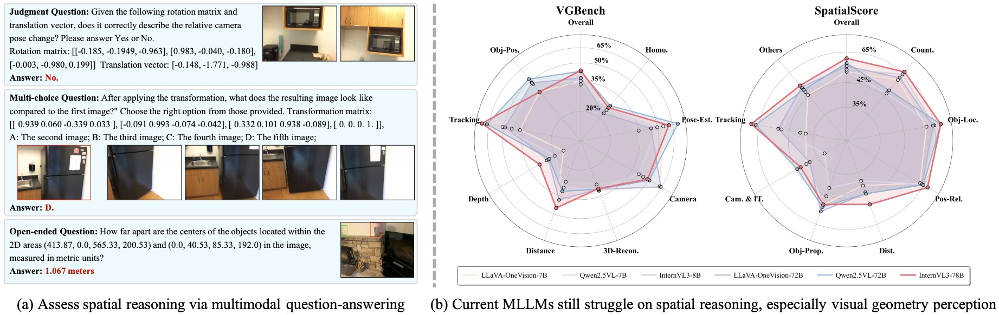
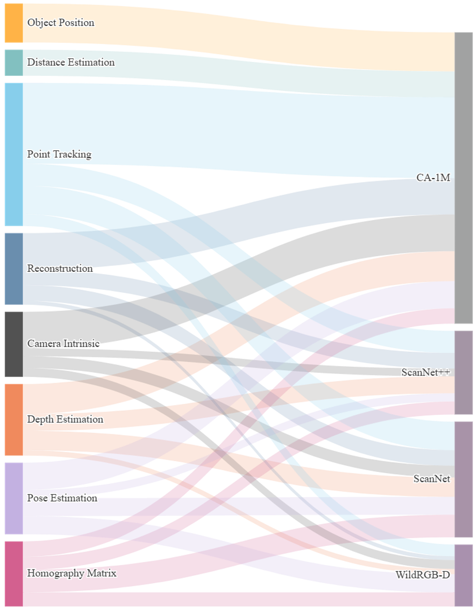
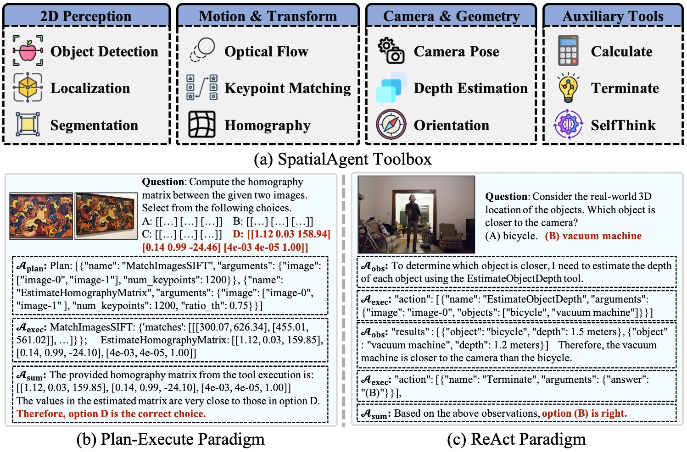
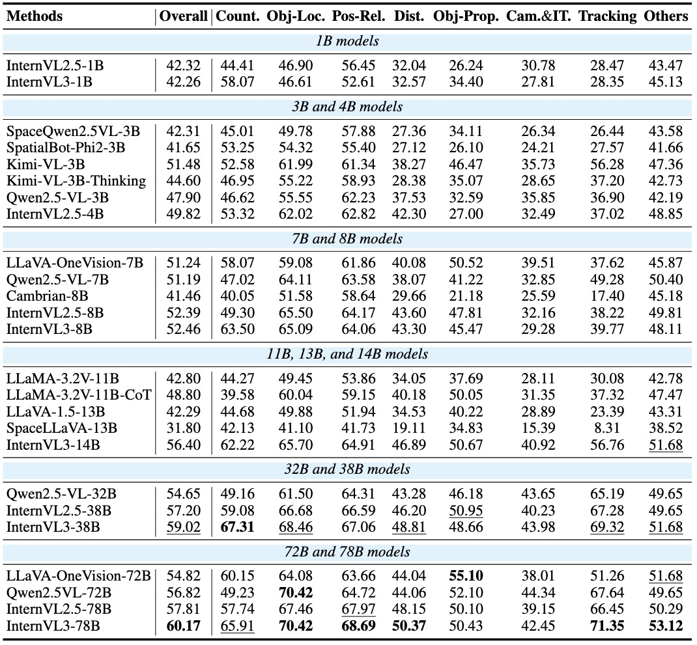
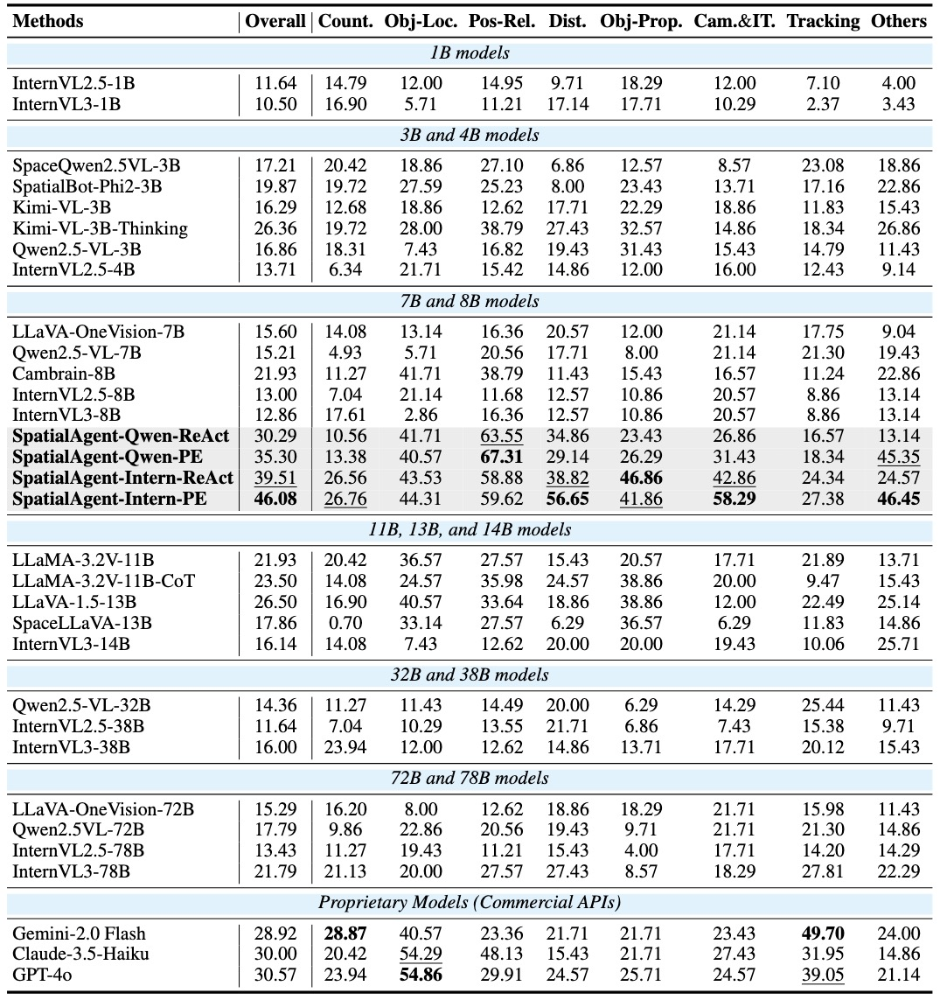
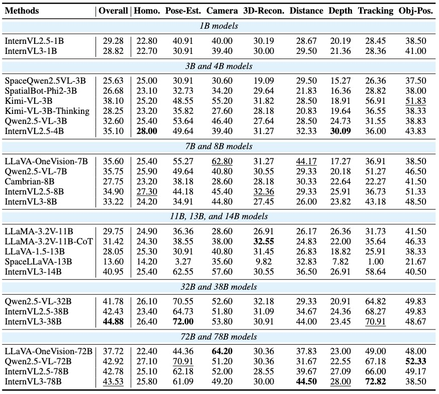
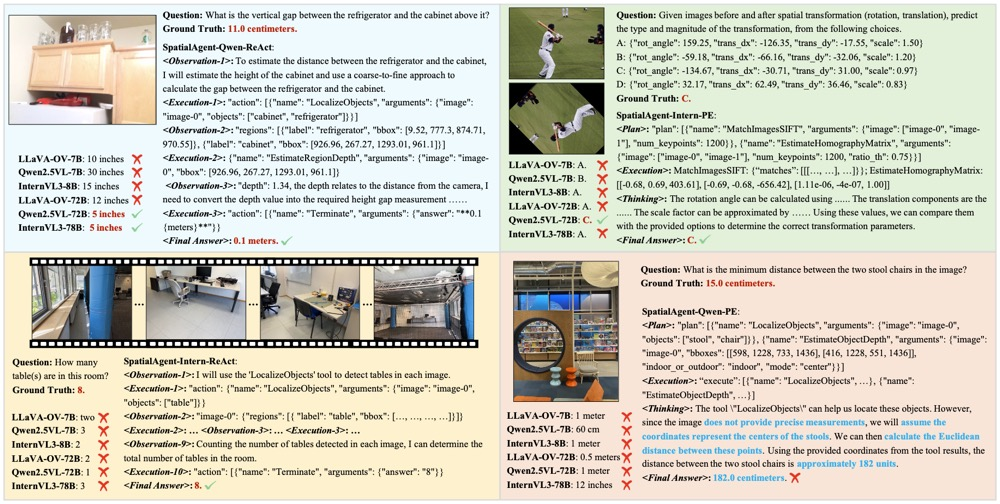

SpatialScore
Towards Unified Evaluation for Multimodal Spatial Understanding
|
1School of Artificial Intelligence, Shanghai Jiao Tong University
|
|
2Shanghai AI Laboratory
|
3Tianjin University
|

Overview.
(a) SpatialScore thoroughly assesses spatial reasoning abilities of current models via question-answering (judgment, multi-choice, and open-ended QA);
(b) Performance of representative models on our proposed VGBench and SpatialScore;
Abstract
Multimodal large language models (MLLMs) have achieved impressive success in question-answering tasks, yet their capabilities for spatial understanding are less explored.
This paper investigates a critical question:
do existing MLLMs possess 3D spatial perception and understanding abilities?
Concretely, we make the following contributions in this paper:
(i) we introduce VGBench, a benchmark specifically designed to assess MLLMs for visual geometry perception, e.g., camera pose and motion estimation;
(ii) we propose SpatialScore, the most comprehensive and diverse multimodal spatial understanding benchmark to date, integrating VGBench with relevant data from the other 11 existing datasets.
This benchmark comprises 28K samples across various spatial understanding tasks, modalities, and QA formats, along with a carefully curated challenging subset, SpatialScore-Hard;
(iii) we develop SpatialAgent, a novel multi-agent system incorporating 9 specialized tools for spatial understanding, supporting both Plan-Execute and ReAct reasoning paradigms;
(iv) we conduct extensive evaluations to reveal persistent challenges in spatial reasoning while demonstrating the effectiveness of SpatialAgent.
We believe SpatialScore will offer valuable insights and serve as a rigorous benchmark for the next evolution of MLLMs.
Data Construction & Statistics

Dataset Construction and Statistics.
(a) The data construction pipeline for VGBench, SpatialScore, and SpatialScore-Hard;
(b) Representative examples from distinct categories in SpatialScore;
(c) Data distribution statistics across VGBench, SpatialScore, and SpatialScore-Hard.

Data sources and task category statistics visualization of SpatialScore.

Data sources and task category statistics visualization of VGBench.
SpatialAgent Architecture

Architecture and Workflow of SpatialAgent.
(a) Specialized spatial understanding tools integrated in SpatialAgent;
(b) The Plan-Execute paradigm for hierarchical task decomposition and stepwise execution;
(c) The ReAct paradigm for iterative interaction and dynamic strategy refinement.
Results
Quantitative Results

Quantitative Results on SpatialScore.
Here, Count., Obj-Loc., Pos-Rel., Dist., Obj-Prop., and Cam.&IT. refer to Counting, Object Localization, 3D Positional Relation, Depth & Distance, Object Properties, and Camera & Image Transformation, respectively.
Results with the best and second best results are bolded and underlined, respectively.

Quantitative Results on SpatialScore-Hard.
Our SpatialAgent demonstrates substantially greater performance improvements on this carefully curated, challenging subset, highlighting its specialized capabilities for spatial understanding tasks.

Quantitative Results on VGBench.
Here, Homo., Pose-Est., 3D-Recon., Tracking, and Obj-Pos. denote Homography Matrix, Pose Estimation, 3D Reconstruction, Point Tracking, and Object Position, respectively.
Results with the best and second best results are are bolded and underlined.
Qualitative Results

Qualitative Results.
We present the comprehensive reasoning process of SpatialAgent against the direct responses of other models.
While occasional errors occur due to tool execution or interpretation mistakes, these limitations are expected to diminish as MLLMs continue to advance.
Welcome to check out our paper for more technical details and results!
Acknowledgements
Based on a template by Phillip Isola and Richard Zhang.